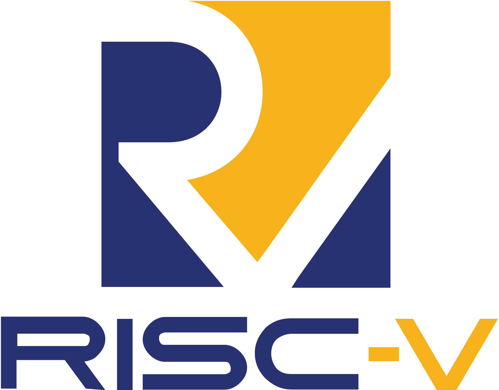
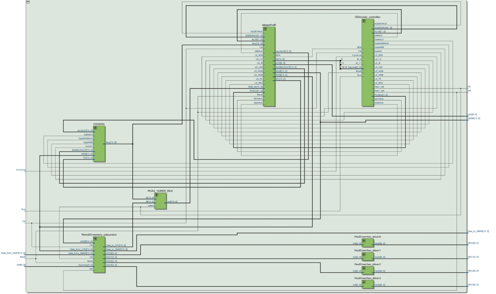
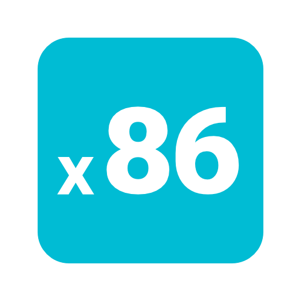
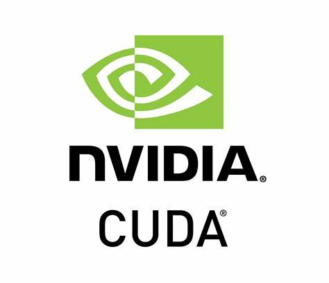
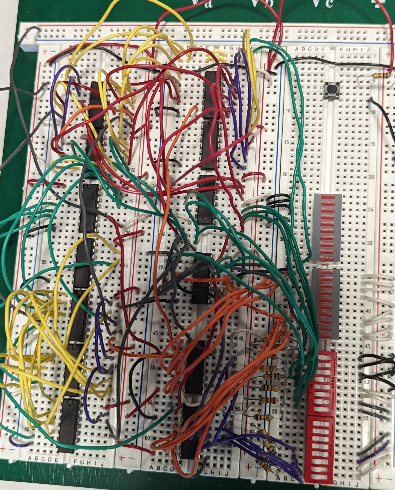
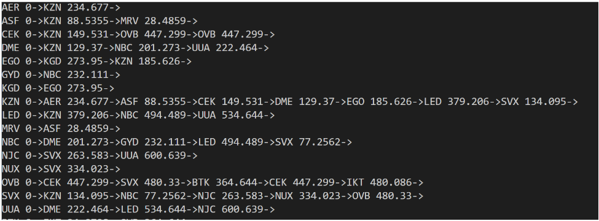
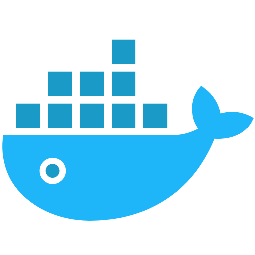

Projects

Speculative Out-of-Order RISC-V Processor
• Designing and verifying ERR out-of-order processor, implementing RV32IM ISA with FP and Mult extensions.
• Developed arbiter for Icache and Dcache, stride prefetchers, and cacheline adapter for efficient two stage cache-DRAM integration.
• Optimizing design with early branch recovery, Perceptron branch predictor with BTB, and split load-store queue.
• Below is a VERY high level overview of the system.
Multi-Cycle RISC-V Processor
• Designed multi-cycle processor using the RISC-V instruction set and standard CPU data path using Verilog and Verdi.
• Implemented register-immediate instructions, load and store memory instructions, conditional branch operations.
• Developed test bench to run sequence of instructions, and to run RISC-V assembly. Verified design using RVFI monitor and SPIKE

System Verilog Projects on DE10-Lite FPGA board
• Designed and built digital systems with TTL and FPGAs. Debugged on Model Sim and Signal Tap Logic Analyzer.
• Replicated classical Tetris with NIOS II and SOC, using 32-bit modified Harvard RISC-V architecture. The game was outputted on monitor via VGA output. Utilized Electronic Design Automation to synthesize logic.
• Developed three-stage (fetch, decode, execute) SLC3 processor for LC3 ISA (ADD, NOT, BR, STR, LDR). Created CPU, SRAM, IR of processor on breadboard. A software implementation done on Quartus Prime with System Verilog.
Single Core Unix x86 Kernel
• Implemented device drivers for keyboard, RTC, Terminal, TUX controller, Process Control Blocks in x86 Assembly.
• Introduced compatibility for Linux commands shell (<10 concurrent), ls, cat, and grep on Posix style shell with keyboard comparability.
• Designed paging-based virtual memory, context switching, read only filesystem, round-robin scheduler.


Convolution Neural Network for Image Classification
• Optimizing forward-pass of convolution layers using NVIDIA Cuda Platform. Developed software for processors with massively parallel computing resources.
• Evaluated performance with Nsight systems/computer profiling tools to refine CUDA kernel for optimal execution. Implementing modified LeNet5 architecture for working with Fashion MNIST dataset
• First, used the unroll and shared-memory matrix multiply method to optimize the kernel. Then, tried to conduct kernel fusion for unrolling and multiply to speed up more. Third, sweep CUDA parameters to find best values. Finally, realize different implementation in kernels with different layer sizes.
Nonlinear Underactuated System
• Utilized two optical encoders to measure required angles to calculate swing velocity and saturation of the Reaction Wheel Pendulum. Developed 6 controllers to stabilize and implement all components of the final robotic arm.
• Simulated a three-state feedback controller to stabilize the velocity of rotor on MATLAB Simulink, used error control to instantiate controller onto RWP. Design process included system identification, model validation, and design validation.

Superheterodyne AM Receiver
• Built receiver on breadboard with RF/IF amplifier, Mixer, Demodulator, local oscillator, and audio amplifier elements.
• Designed digital filter to demodulate AM signal, replace IF signal with soundcard-based sampler receiver, and play audio on speakers for software radio. Measured AM receiver performance, sensitivity to noise, and image rejection.

Open Flights Airplane Path Optimization
• Developed a program to find the shortest path between airports using the OpenFlights dataset
• Created a weighted directed graph using adjacency lists, with distances between vertices calculated from routes.dat
• Implemented both Floyd-Warshall and A* algorithms to efficiently find shortest paths
• Performed data cleaning and graph construction using DFS to validate path existence between airports

Languages and Tools